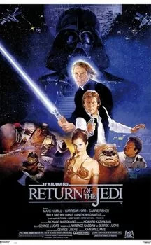

Star Wars (La Guerre des étoiles en VF à sa sortie) est un univers de science fantasy créé par George Lucas.
D'abord conçue comme une trilogie cinématographique sortie entre 1977 et 1983.
En accord avec les lois du genre space opera, l'action se déroule « il y a bien longtemps, dans une
galaxie très lointaine », qui est le théâtre d'affrontements entre les Chevaliers Jedi et
les Seigneurs noirs des Sith, personnes sensibles à la Force, un champ énergétique mystérieux leur
procurant des pouvoirs psychiques. Les Jedi maîtrisent le Côté lumineux de la Force,
pouvoir bénéfique et défensif, pour maintenir la paix dans la galaxie.
Les Sith utilisent le Côté obscur, pouvoir nuisible et destructeur, pour leurs usages
personnels et pour dominer la galaxie.
Synopsis des films
Episode IV : Un nouvel espoir
L'intrigue du
film se concentre sur l'Alliance rebelle, une organisation qui tente de détruire la station
spatiale Étoile noire, l'arme absolue du très autoritaire Empire galactique.
Mêlé malgré lui à ce conflit galactique, le jeune ouvrier agricole Luke Skywalker s'engage
au sein des forces rebelles après le massacre de sa famille par des soldats impériaux. Initié aux
pouvoirs de la Force par son mentor Obi-Wan Kenobi, trop tôt assassiné par le maléfique
Darth Vader (Dark Vador en VF), Luke utilise ses nouveaux dons pour détruire
l'Étoile noire à la fin du film.
L'histoire de cet épisode se déroule trois ans après les événements
d'Un nouvel espoir. La guerre entre le maléfique Empire galactique et son
antagoniste, l'Alliance rebelle, bat son plein. Les héros de l'Alliance Luke Skywalker et
Han Solo se séparent après la prise de la principale base rebelle par l'Empire.
Luke part sur la planète Dagobah afin de suivre la formation de Jedi auprès du
maître Yoda. Solo tente lui d'échapper à la chasse spatiale que lui mène
Dark Vador, l'apprenti de l'Empereur Palpatine.
Le film se termine par un combat entre Luke et Vador et la scène culte où Vador lui révèle qu'il
n'est
autre que son père.
L'histoire de
cet épisode se déroule un an après les événements de L'Empire
contre-attaque.
Le maléfique Empire galactique construit une nouvelle station spatiale Étoile de la mort pour
anéantir définitivement l'Alliance rebelle, son opposition principale. Pour tendre un piège à la
flotte ennemie, l'empereur Palpatine se rend sur la station encore vulnérable. Les
dirigeants de l'Alliance lancent donc toutes leurs forces à l'assaut ne se doutant pas que la
flotte impériale les attend de pied ferme. De son côté, le jeune Jedi Luke Skywalker,
l'un des héros de l'Alliance, veut sauver son père Dark Vador du côté obscur de la Force
et le rallier à sa cause.
 L'intrigue du
film se concentre sur l'Alliance rebelle, une organisation qui tente de détruire la station
spatiale Étoile noire, l'arme absolue du très autoritaire Empire galactique.
Mêlé malgré lui à ce conflit galactique, le jeune ouvrier agricole Luke Skywalker s'engage
au sein des forces rebelles après le massacre de sa famille par des soldats impériaux. Initié aux
pouvoirs de la Force par son mentor Obi-Wan Kenobi, trop tôt assassiné par le maléfique
Darth Vader (Dark Vador en VF), Luke utilise ses nouveaux dons pour détruire
l'Étoile noire à la fin du film.
L'intrigue du
film se concentre sur l'Alliance rebelle, une organisation qui tente de détruire la station
spatiale Étoile noire, l'arme absolue du très autoritaire Empire galactique.
Mêlé malgré lui à ce conflit galactique, le jeune ouvrier agricole Luke Skywalker s'engage
au sein des forces rebelles après le massacre de sa famille par des soldats impériaux. Initié aux
pouvoirs de la Force par son mentor Obi-Wan Kenobi, trop tôt assassiné par le maléfique
Darth Vader (Dark Vador en VF), Luke utilise ses nouveaux dons pour détruire
l'Étoile noire à la fin du film.
 L'histoire de cet épisode se déroule trois ans après les événements
d'
L'histoire de cet épisode se déroule trois ans après les événements
d'